手搓魔法 · 11-09 商店素材审阅
1. 游戏截图：旧 7 张 → 新 7 张（9:16，1080×1920）
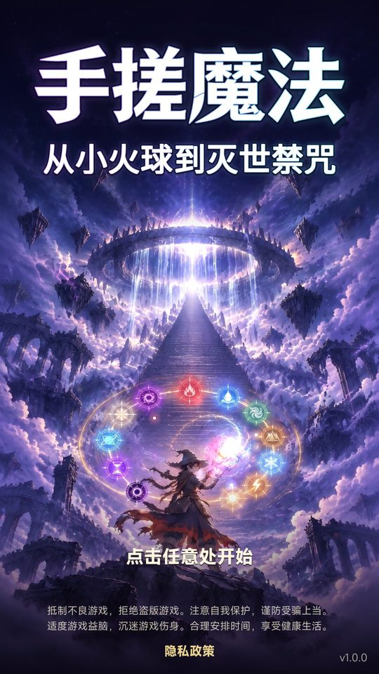
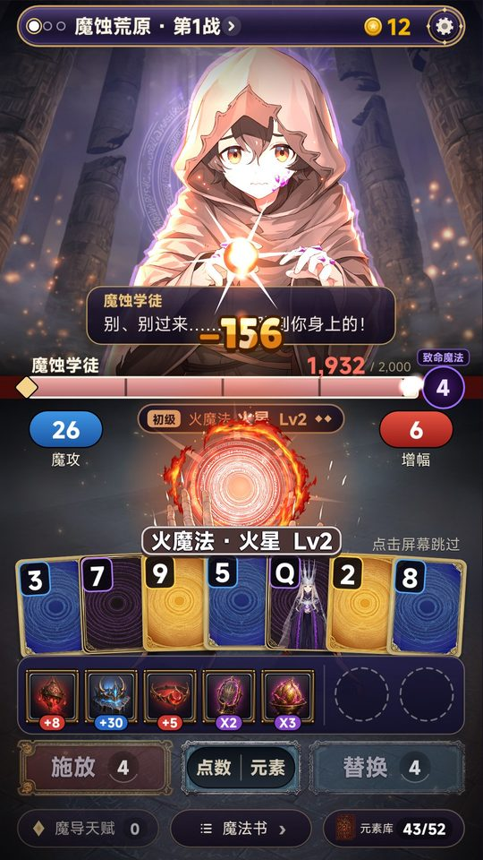
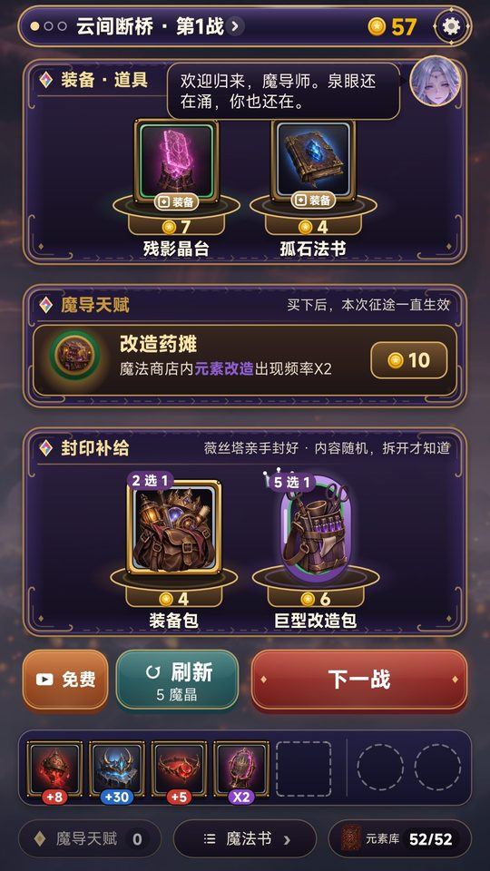
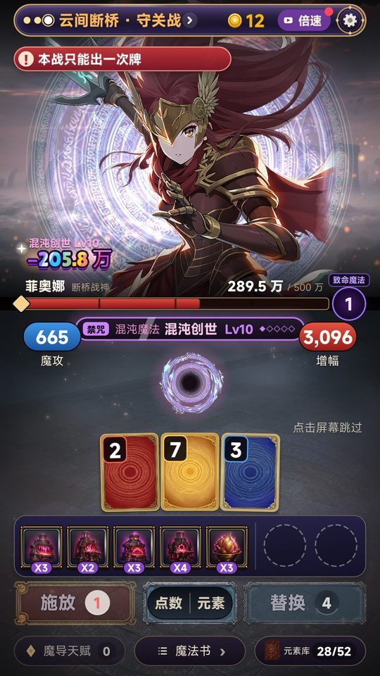
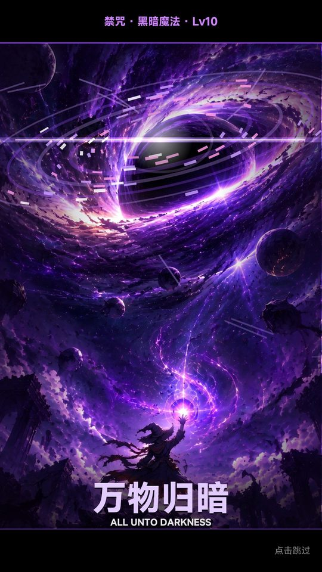
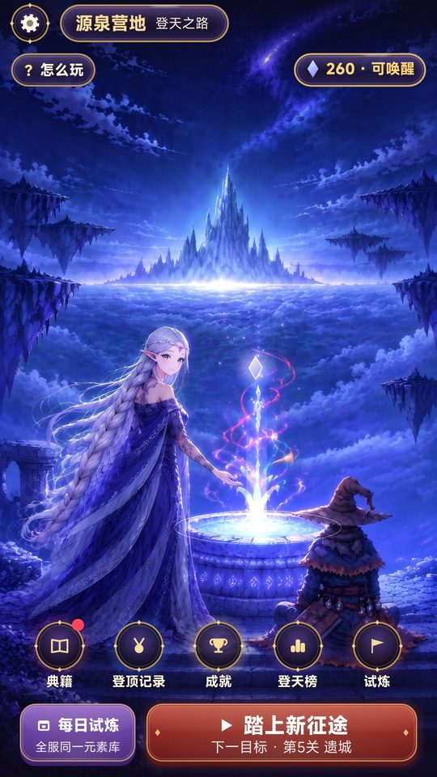
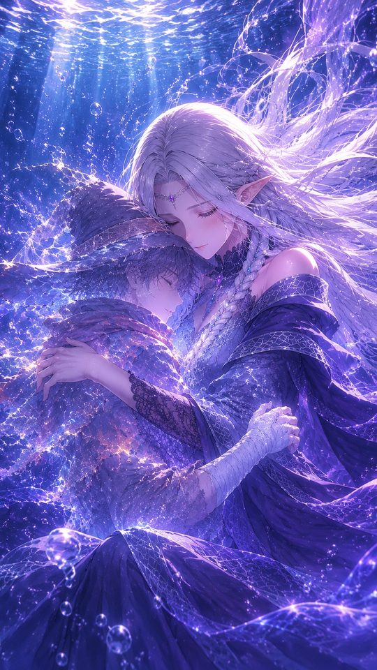

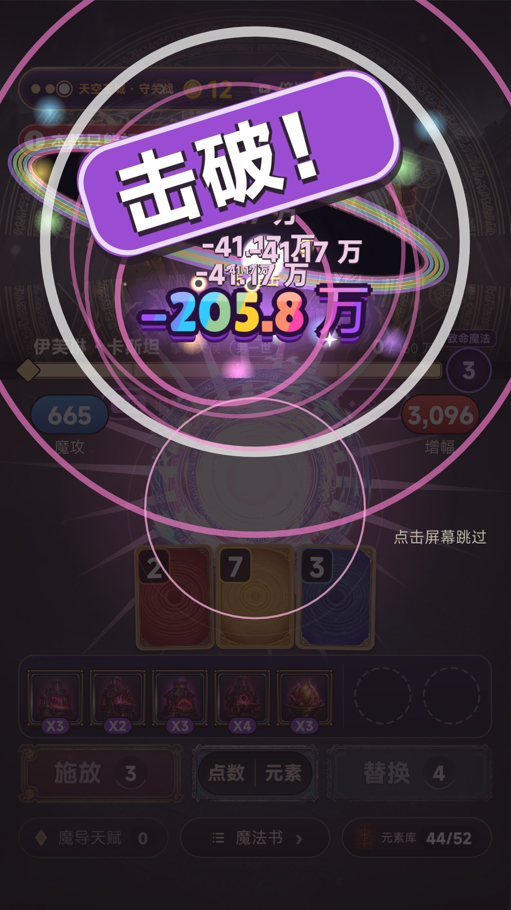

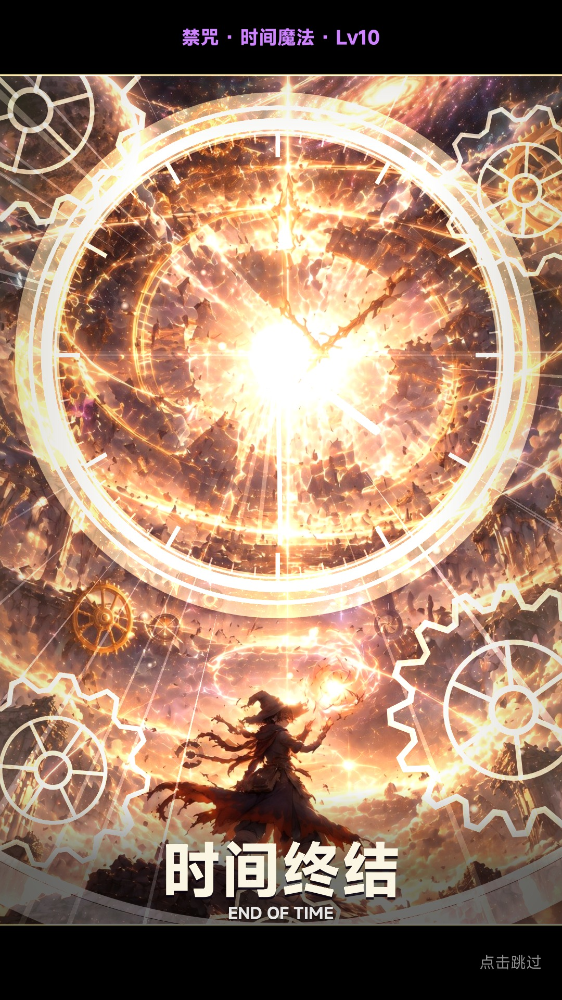

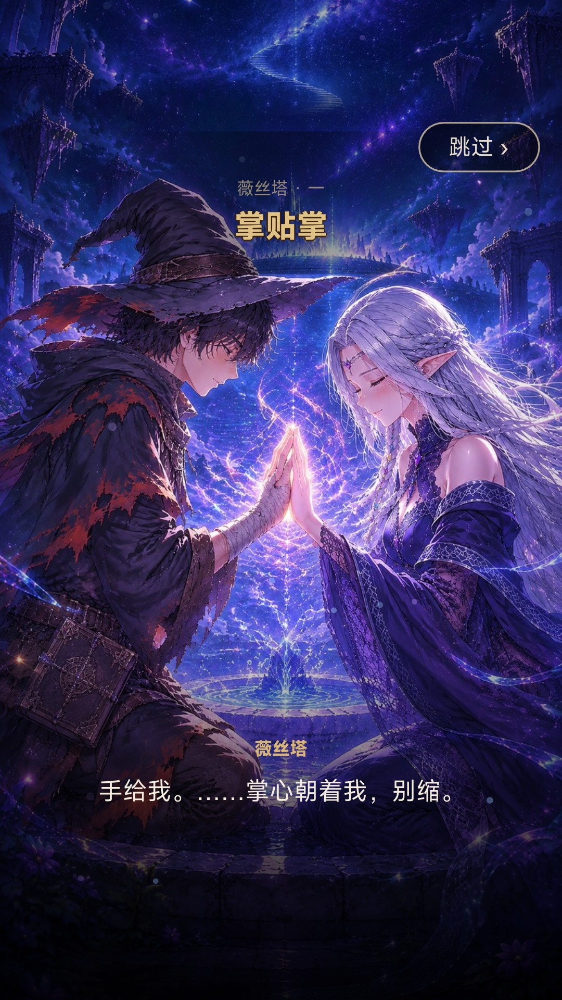

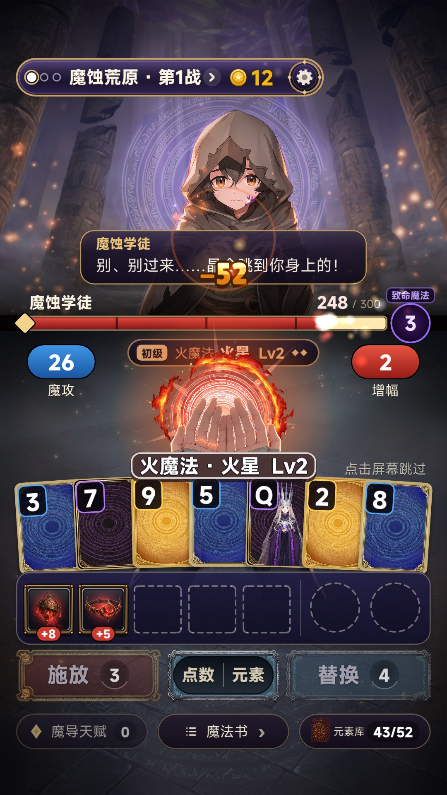

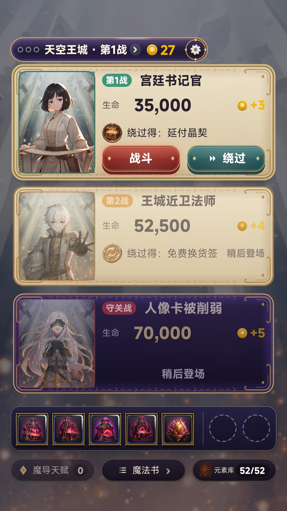

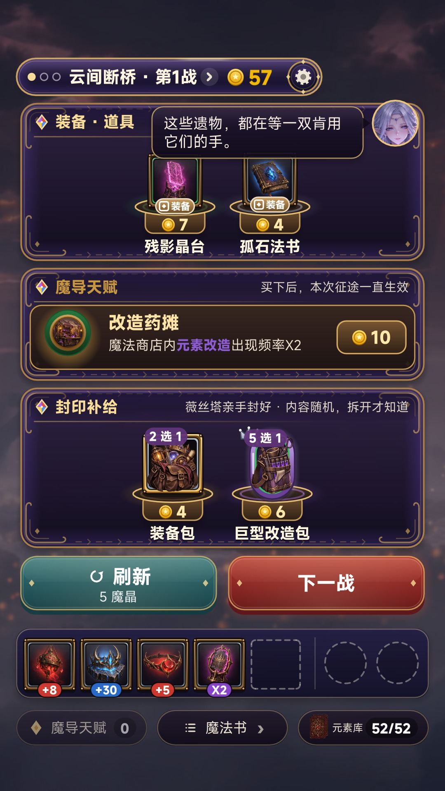

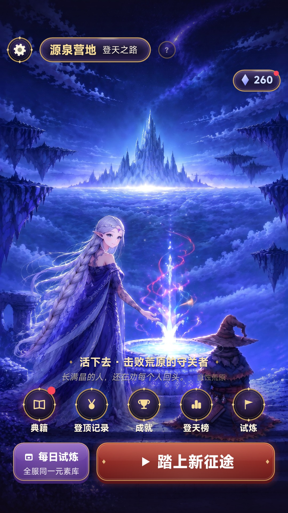

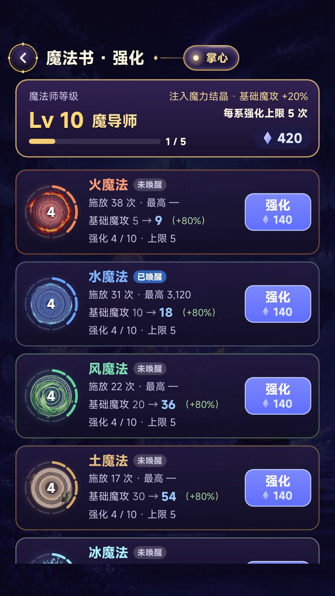
-dv-notch 的手机布局（安全区、胶囊位置），但不画假刘海和胶囊描边（-rec-nonotchui）：实机录屏字段写明「请勿露出手机等设备 UI」，截图也按这个口径。每张 < 1 MB（0.34–0.63 MB）。2. 实机录屏 v4（9:16 · 1080×1920 · 49.6 秒 · H.264 + AAC · 19.7 MB）
页面上是 540×960 预览（5.5 MB）。原片 1080×1920 下载
前 5 秒（一条连续实机，没有剪接）：
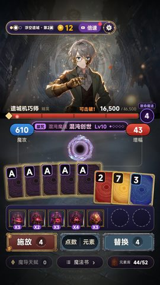
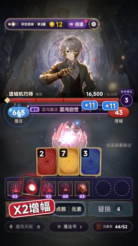
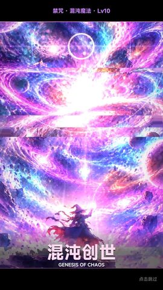
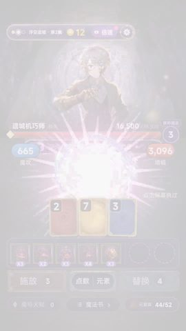
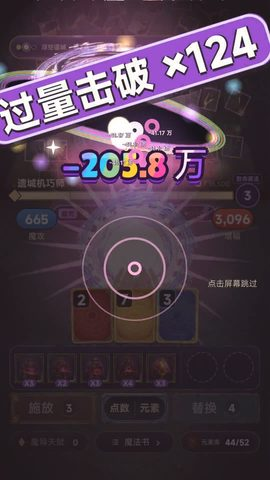
| 时间 | 内容 |
|---|---|
| 0–6 s | 浮空遗城第 2 战（精英 遗城机巧师）：一手牌 → 禁咒 → −205.8 万（游戏 4 倍速，游戏自己的倍速功能） |
| 6–14 s | 结算、商店（买装备）、选对手 |
| 14–34 s | 守关战 克洛伊，恢复 1 倍速，像玩家一样选牌出牌（暗影、火星…），击破；守关者的回音（双手捧光） |
| 34–49.6 s | 结算 → 商店 → 天穹壁垒第 1 战继续打（石刺、风刃、装备连锁） |
✓ 前 5 秒是核心玩法；连续核心玩法远超 10 秒；只有游戏原声（BGM boss/noon/shop + 记录的音效），没有旁白、字幕、画中画、设备 UI。
和旧录屏（videoId 6065360）的区别：旧的前 5 秒只有一百多的数字。导演用调试开关把一手五张 A 和 5 件装备摆好（真实玩法，只是不用等抽到）。
3. 宣传片 v4（16:9 · 1920×1080 · 25.9 秒 · H.264 High + AAC · 26.2 MB）
页面上是 1280×720 预览（5.8 MB）。原片 1920×1080 下载 · 旧 v3：shoucuo-review-1108-trailer-v3
| 时间 | 镜头 | 来源 |
|---|---|---|
| 0–1.4 s | 薇丝塔主视觉 + 完整字标（= 第 0 帧 / 封面，和现在的 16:9 宣传图一致） | promo-16x9-A-L25 |
| 1.4–3.2 s | 白闪 → 守关战 巴尔德温，禁咒·混沌创世命中，−205.8 万在 2.4 s 落地；旁字「一手牌 / 百万伤害」 | 实机 |
| 3.2–6.0 s | 一手牌逐张选中，面板上的魔法跟着变（火球 → 水龙 → 岩崩 → 噬光 → 空间断裂）；「四色元素 自由组合 / 组合不同 魔法不同」 | 实机 |
| 6.0–7.4 s | 装备连锁 ×2 ×3 ×4；「装备连锁 层层叠乘」 | 实机 |
| 7.4–17.5 s | 保留 v3 的「小火球 → 灭世禁咒」：火星 Lv2 −52「从一颗小火球」→ 火球 Lv4 −184「越练越强」→ 爆炎 Lv7（游戏内高级演出）→ 焚天全屏 → 太阳落地、守关者和军队被吞没、−205.8 万「到灭世禁咒」。v3 里黑脸法师的两刀（掌心小火球、爆炎背影）换成了游戏实机 | 实机 + v3 CG（焚天 HD 关键帧） |
| 17.5–19.4 s | 禁咒快剪 万物归暗 / 时间终结；「12 系魔法 · 12 道禁咒」 | 游戏禁咒关键帧 |
| 19.4–21.7 s | 薇丝塔「掌贴掌」CG（游戏内原图）；「守泉人 薇丝塔」 | 游戏 CG |
| 21.7–25.9 s | 片尾：同一张主视觉，两行字标入场 + 扫光，淡出。没有「预约中」，没有其他字 | 主视觉 + logo.png |
声音：游戏守关战 BGM boss.ogg（130 BPM，卡小节）、实机镜头里记录的游戏音效和咒语声、v3 的 CG 镜头音效；无旁白。-15 LUFS。
去掉的：v3 开头标题卡 + 黑脸法师四刀（0–5.5 s）、片尾「TapTap 预约中」。不出第 8 关 / 阿斯特里昂；没有用 AI 视频。
和实机录屏不雷同：录屏是竖屏单条连续实机（浮空遗城精英 → 克洛伊 → 天穹壁垒）；宣传片是横屏剪辑，实机镜头来自另外几局（巴尔德温守关战、魔蚀荒原、失落魔都），大半是主视觉 / 禁咒 / CG。
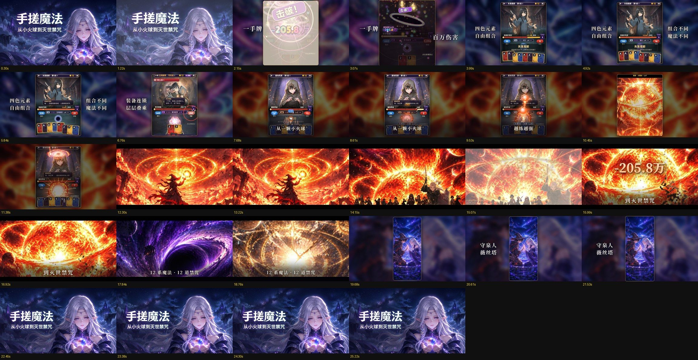
4. 首页推荐素材（promotion_material_type）
现在：BANNER_4（薇丝塔 16:9 宣传图）+ 推荐语「卡牌肉鸽：一手元素牌，从小火球搓到灭世禁咒」。可选 BANNER_4 / GAMEPLAY_DEMO / TRAILER。
建议：这次提交保持 BANNER_4 不变，只换截图、录屏、填宣传片。理由：
- 11-08 换成薇丝塔后首页推荐 5/19 次点击（26.3%），样本太小，现在同时换卡片会分不清是哪一项起的作用（U4：一次只改一个变量）。
- 宣传片第 0 帧就是同一张主视觉，以后切到
TRAILER时卡片第一眼不变，只多了「自动播放 → 2.4 s 出 −205.8 万」。 - v4 过审后观察 48 h；首页推荐攒够 ≥500 次曝光后再单独切
TRAILER看 ≥500 次，谁的点击率高留谁。判断线：≥15% 保留；<10% 换带牌的宣传图 B（U6）。 GAMEPLAY_DEMO不建议：竖屏录屏放在横版卡片里两边是空的。
5. 待你确认
- 新截图 7 张的顺序；第 8 张要不要放魔法书。
- 实机录屏 v4 换掉 6065360。
- 宣传片 v4 填进空着的 trailer 字段。
- 首页推荐这次保持 BANNER_4。
确认后再上传、写入草稿、和最新 Spark 一起提审（保持预约）。